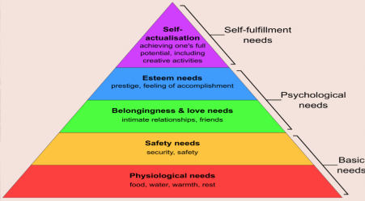
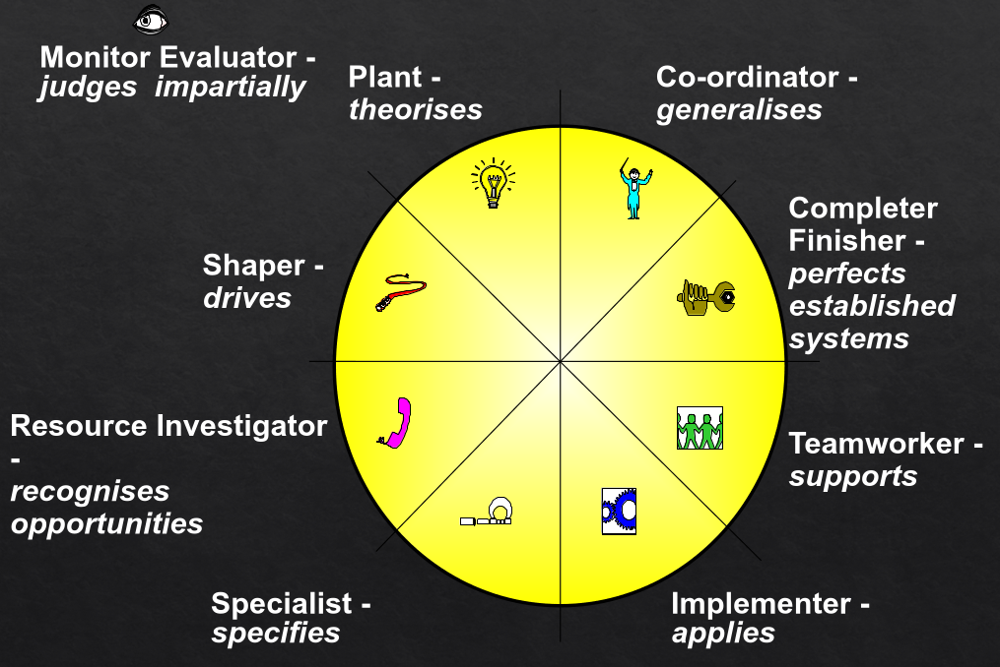

Self Management and Teamwork
Table of Contents
- 1. Usual Exam Questions
- 1.1.
ChatGPTand how it helped with the team - 1.2.
EI, emotional intelligence - 1.3.
Maslow'sneeds hierarchy - 1.4. Four behaviour types
DISC. Quadrants of Marston's model. - 1.5.
Belbinprofiles - 1.6.
MarstonModel - 1.7. Problem Based Learning (
PBL) - 1.8. Self Analysis
- 1.9.
Belbin - 1.10.
Belbin9 roles and what isteam role. Opposites of each role. - 1.11.
Lyssa Adkinsfive levels of conflict model - 1.12.
Fredrick Taylorfour basic theories of scientific management. - 1.13.
Kurt Lewinchange management - 1.14.
Tuckman's Form/Storm/Norm/Performused by a Scrum Master to empower the team. - 1.15.
Lyssa AdkinsHigh-Performance Tree
- 1.1.
- 2. Notes
- 3. Remove at the End
1. Usual Exam Questions
1.1. ChatGPT and how it helped with the team
- Problem solving
- Learning and knowledge sharing
- Team communication
- Agile Scrum practices
- Negatives
- Reduces team interaction when AI relied too much on
- Too dependent on AI
- Works best as a support tool, not a replacement for thinking
1.2. EI, emotional intelligence
- Ability to perceive, control and evaluate emotions.
1.3. Maslow's needs hierarchy

1.4. Four behaviour types DISC. Quadrants of Marston's model.
Dominance: task focused, results driven, likes controlInfluence: people focused, outgoing, good at communicationSteadiness: calm, supportive, cooperativeConscientiousness: detail-oriented, careful, analyticalDISCquadrants are based on:- Task vs People focus
- Active vs Passive behaviour
DISCand usage ofChatGPT- Most of our team had S and C traits: supportive, organised and focused on quality
D: Used AI to make quick decisions and move forward, improved efficiencyI: Used AI for idea generation and communication, helps brainstorm and explainS: Used AI to support teamwork and reduce pressureC: Used AI to construct accurate answers and structured solutions
1.5. Belbin profiles
- Coherent Profile: Self (SPI) and observers agree. Show strong self-awareness and consistency.
- Compatible profile: some similarities
- Confused profile: all over the place
- Discordant profile: observers agree, but personal does not. Poor self awareness.
1.6. Marston Model
- In the Marston model lets place DISC clockwise like so:
Di CS
- Then: on the left perceives an unfavourable environment and on the right its a favourable one
- Then: on top perceives self as more powerful than environment, bottom less powerful than the environment
1.7. Problem Based Learning (PBL)
- When a problem needs solving it is seen as an opportunity for learning. So the problem is seen as a starting point, so instead of just solving the problem, the goal is to develop understanding, teamwork and critical thinking.
- Collaboration centered, brainstorming (discussions), real world problems, etc.
- The
tutoris a guide, basically, but never gives direct solutions.
1.8. Self Analysis
Belbin
- Plant: AI is helpful and is frustrating because plant is creative. But it help the plant with new ideas.
- Resource Investigator: explorer works well with AI, but has a tendency to get sucked into it too much.
- Implementer: helps in generating output faster. May become too reliant.
- Teamworker: clear steps and a structure to follow. But AI reduces communication with the team.
DISC
- Mostly I and C: I = communication, brainstorm, explain, C = Construct accurate answers and structured solutions
Ocean 5
1.9. Belbin
- Personal: Monitor Evaluator, Coordinator, Specialist
- Group: Completer Finisher, Implementer, Shaper
1.10. Belbin 9 roles and what is team role. Opposites of each role.
- A
team roleaccording to Dr Meredith Belbin is: The way a person behaves, contributes and interacts within a team. It is based on a person's strengths and behaviour, not just their job role. Helps the team to understand each other better and how people fit. - Roles
Plant-> IdeasCompleter Finisher-> Follow ThroughResource Investigator-> Explorer, contactsImplementer-> OrganisationMonitor Evaluator-> PlansShaper-> Action/DriveCoordinator-> CoordinationTeamworker-> SupportSpecialist-> Knowledge
- Opposites, this is opposite behaviour, not opposite to argue with each other:

Planttheorises ->ImplementerappliesCoordinatorgeneralises ->SpecialistspecifiesResource Investigatorrecognizes opportunity ->Completer Finisherperfects established systemShaperdrives ->TeamworkersupportsMonitor Evaluatorjudges impartially
1.11. Lyssa Adkins five levels of conflict model
- Level 1: Problem to Solve. Healthy, respectful.
- Level 2: Disagreement. Tensions appear, but still controlled.
- Level 3: Contest. People try to win arguments. Less focus on solution.
- Level 4: Fight. Emotions escalate. Communication breaks down.
- Level 5: Intractable: Conflict is destructive, no cooperation exists.
1.12. Fredrick Taylor four basic theories of scientific management.
- Find the one best way to do a task
- Select and train workers properly
- Supervise closely and use rewards
- Managers plan, workers execute
1.13. Kurt Lewin change management
- Unfreeze: prepare people for change
- Change: Introduce change
- Refreeze: Make the change permanent
1.14. Tuckman's Form/Storm/Norm/Perform used by a Scrum Master to empower the team.
- Forming (awareness): SM provides guidance and structure
- Storming (conflict): SM manage conflict and encourage open communication
- Norming (cooperation): SM supports collaboration and participation
- Performing (productivity): SM empowers the team and reduces control
1.15. Lyssa Adkins High-Performance Tree
Roots(Foundation):- Trust, respect, relationships
- Strong foundation needed
Trunk(Core practices):- Communication, collaboration, Scrum values
- Supports how the team works together
Branches/Leaves(Outcome):- High performance, productivity, success
- Scrum values:
- Commitment
- Focus
- Openness
- Respect
- Courage